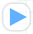
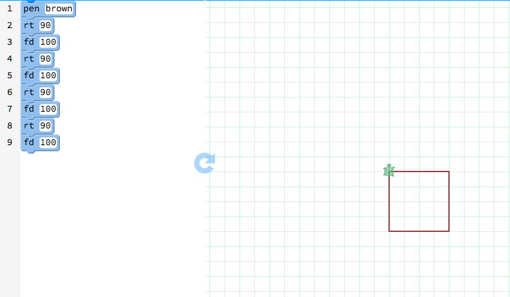

Step 1 Draw the base of the house.
- Drag the pen block onto your canvas.
- To make your first corner, type in a color, like brown.
- First drag the rt block and type in a number of degrees for the cursor to turn, like 90.
- Then drag the fd block and type in 100 to draw the first line.
- Repeat fd 100 and rt 90 three more times.
- Press the  button to see the base!
